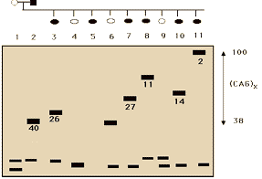

Recombinant DNA Technology Problem Set
Problem 7: Huntington's disease 1
Tutorial to help answer the question
|
The data below shows the results of electrophoresis of PCR
fragments amplified using probes for the site which has been shown to be altered in Huntington's disease. The male parent, as shown by the black box, got Huntington's disease when he was 40 years old. His children include 6
(3,5,7,8,10,11) with Huntington's disease, and the age at which the symptoms
first began is shown by the number above the band from the PCR fragment.
 What is the prognosis for the normal children 4, 6, and 9? |
Tutorial
Prognosis for children
|
During electrophoresis, fragments of DNA migrate through a gel with larger fragments moving more slowly. In Huntington's disease, PCR amplifies a region of the chromosome which has variable number of repeating CAG
sequences. Normal individuals can have up to 30 copies of the sequence but individuals with Huntington's have from 37 to over a hundred.
In the gel showing results of the PCR experiment for a family with a father having Huntington's disease, children 4 and 9 show only normal sizes for this region, showing that they will not get the disease. The normal individual 6 has amplified sequences similar to the diseased father, showing that he too will get Huntington's disease. The size of the CAG fragment correlates with the age of onset. Since the father got the disease at age 40, and child 6 has the same size of the fragment, we can suggest that he is likely to get Huntington's disease about the time he reaches 40. |


University of Arizona
Updated: July 15, 1999
Contact the Development Team
http://biology.arizona.edu
All contents copyright © 1996-99. All rights reserved.